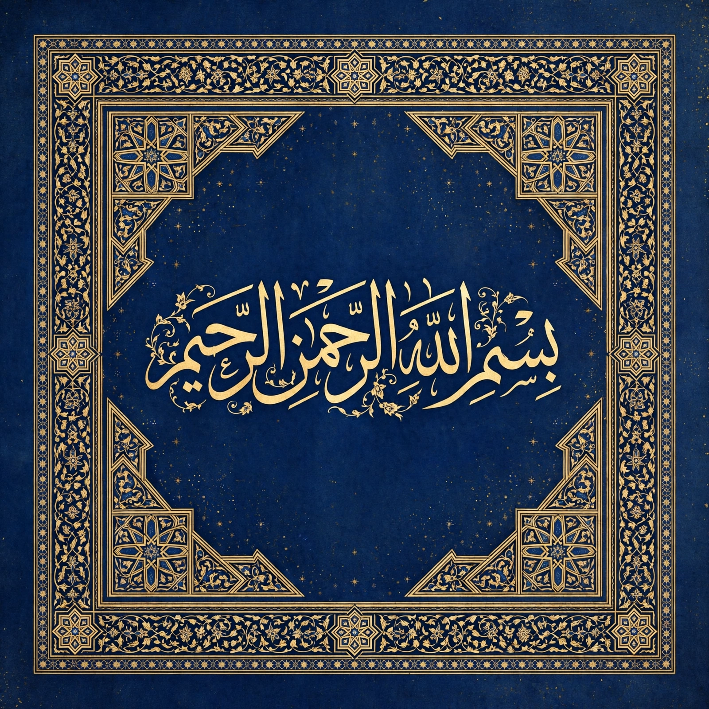

| Mahdi | |
| Arabic | المهدي (al-Mahdī, "the Guided One") |
|---|---|
| Religion | Islam |
| Role | Prophesied redeemer of Islam who will rule before the Day of Judgment |
The Mahdi (Arabic: ٱلْمَهْدِيّ, romanized: al-Mahdī, lit. 'the Guided One') is a prophesied redeemer of Islam who, according to Islamic eschatology, will appear at the end of times to rid the world of evil and injustice, ruling for a period of years before the Day of Judgment. Belief in the Mahdi is widespread among Muslims, though its details differ significantly between Sunni and Shia traditions. The word does not occur in the Quran, but the figure is described in hadith literature.

In Sunni tradition the Mahdi is a future figure, a descendant of the Prophet Muhammad through his daughter Fatima, who will bear the Prophet's name (Muhammad ibn Abdullah) and will appear before the return of Isa (Jesus). He will fill the earth with justice as it had been filled with oppression, distribute wealth equitably, and rule for a period commonly given as seven, nine or nineteen years. His coming is one of the major signs of the Hour, associated with the appearance of the false messiah, al-Masih ad-Dajjal, whom Jesus will defeat.
In Twelver Shia Islam the Mahdi is identified with Muhammad al-Mahdi, the twelfth and final Imam, who was born in Samarra in 869 CE (255 AH) and is believed to have entered occultation (ghayba) in 874; the Minor Occultation, during which he communicated through four deputies, was followed in 941 by the Major Occultation, which continues until God permits his return. Awaiting his reappearance (intizar) is a central act of devotion; he is often invoked by the title Sahib al-Zaman, "Master of the Age". Other Shia branches, such as the Ismailis and Zaydis, hold different views of the Mahdi.
Numerous figures have claimed to be the Mahdi or been proclaimed so by followers, often at moments of political crisis. They include Muhammad Ahmad of Sudan, whose Mahdist movement defeated Egyptian and British-Egyptian forces in the 1880s and established a state centred on Omdurman, and Mirza Ghulam Ahmad, founder of the Ahmadiyya movement, who claimed to be the Mahdi and Messiah in a non-literal sense. Millenarian expectations concerning the Mahdi have repeatedly influenced politics across the Muslim world.
Muhammad al-Mahdi · Islamic eschatology · Messiah · Occultation